← Toate lecțiile
Producție media · clasa a XII-a · Scribus
Scripturi Scribus
21 de programe scurte care desenează singure în Scribus: de la o mandala la o revistă întreagă. Se descarcă, se rulează și apoi se modifică.
Cuvinte noi
Script un program scurt, scris ca text, pe care alt program (aici Scribus) îl execută pas cu pas.
Python limbajul în care sunt scrise aceste scripturi; fișierele au terminația .py și se deschid cu orice editor de text.
CSV fișier-tabel simplu, în care coloanele sunt despărțite prin virgulă; se salvează din Excel cu „Salvare ca → CSV UTF-8”.
Cum se rulează un script
Se descarcă scriptul cu butonul Descarcă scriptul și se ține minte folderul.
Se deschide Scribus 1.6 .
Din meniu: Script → Execute Script… și se alege fișierul .py .
Scriptul cere una–trei valori într-o fereastră (se poate apăsa direct OK), apoi desenează. La scripturile cu peste 1000 de obiecte durează până la un minut.
Rezultatul se salvează cu File → Export → Save as PDF…
Cum se modifică un script
Fișierul .py se deschide cu Notepad (clic dreapta → Deschidere cu).
Se schimbă o singură valoare — o culoare, un număr, un text —, se salvează și se rulează din nou.
Rândurile care încep cu # sunt explicații; ele spun ce face partea de dedesubt.
Dacă scriptul nu mai pornește, se revine la varianta descărcată.
Artă generativă și automatizare
Desene făcute din formule și documente făcute din date.
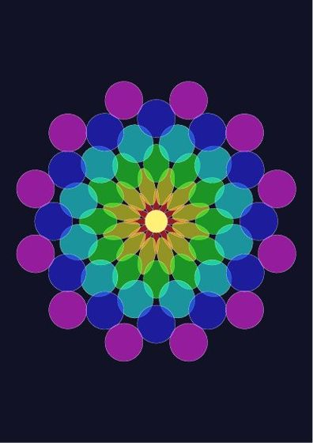
01_mandala.py
Mandala
Petale colorate așezate pe inele concentrice, semitransparente, pe fond închis.
Cere numărul de petale și de inele Se învață unghiuri și cercuri → poligoane; cercul cromatic; transparența Descarcă scriptul
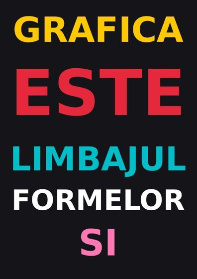
02_poster_tipografic.py
Poster tipografic
Afiș A3 în care fiecare cuvânt al unei fraze umple lățimea paginii.
Cere fraza afișului Se învață corpul de literă calculat din lățimea rândului Descarcă scriptul
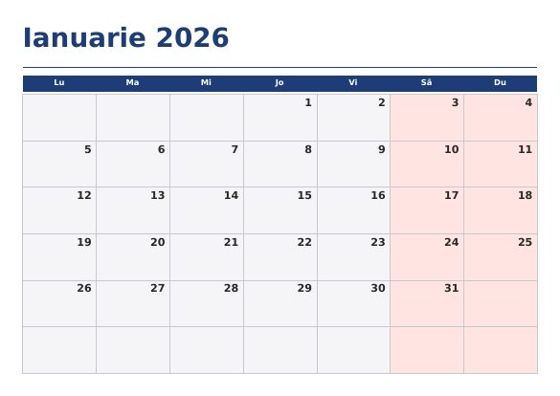
03_calendar.py
Calendar de perete
12 pagini A4, câte una pe lună, cu sfârșitul de săptămână colorat și ziua curentă evidențiată.
Cere anul Se învață grila; pagini multiple; date → machetă Descarcă scriptul
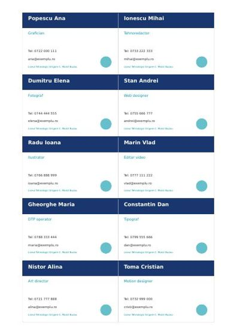
04_carti_vizita_csv.py
Cărți de vizită din tabel
10 cărți de vizită pe pagină, completate automat dintr-un fișier CSV (nume, funcție, telefon, e-mail).
Cere fișierul CSV (fără fișier: date de exemplu) Se învață același model, completat cu date diferite Descarcă scriptul
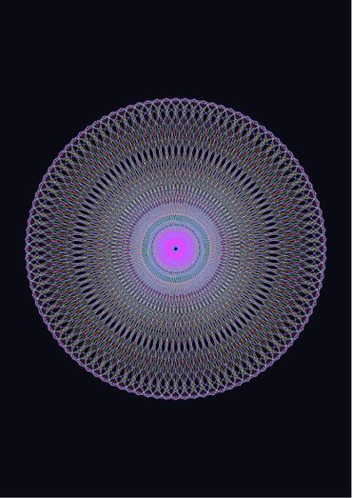
05_spirograf.py
Spirograf
Curbe matematice suprapuse, ca la jucăria Spirograph.
Cere numărul de curbe Se învață legătura dintre formulă și formă Descarcă scriptul
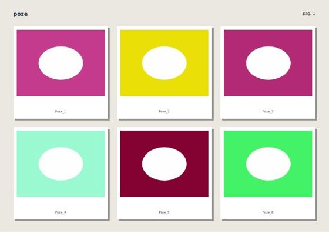
06_album_foto.py
Album foto
Copertă și pagini cu fotografiile dintr-un folder, fiecare în ramă albă, cu umbră și legendă.
Cere folderul, titlul, coloane și rânduri Se învață cadre de imagine; scalare proporțională Descarcă scriptul
Efecte vizuale
Efecte obținute numai din forme simple, repetate de sute sau mii de ori.
07_text_3d.py
Titlu 3D cu reflexie
Un cuvânt în relief, din 25 de straturi tot mai luminoase, cu reflexie estompată dedesubt.
Cere cuvântul și nuanța Se învață straturi suprapuse; luminozitate; transparență Descarcă scriptul
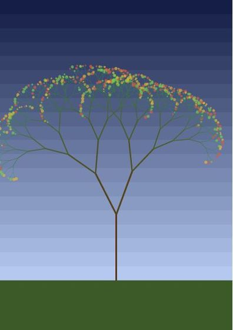
08_arbore_fractal.py
Arbore fractal
Copac în care fiecare ramură se desface în două ramuri mai scurte; la fiecare rulare iese alt copac.
Cere numărul de niveluri și unghiul Se învață repetarea aceleiași reguli la scară tot mai mică Descarcă scriptul
09_galaxie.py
Galaxie spirală
Circa 1500 de stele pe brațe în spirală, cu nucleu strălucitor.
Cere numărul de brațe și de stele Se învață spirala; hazardul controlat Descarcă scriptul
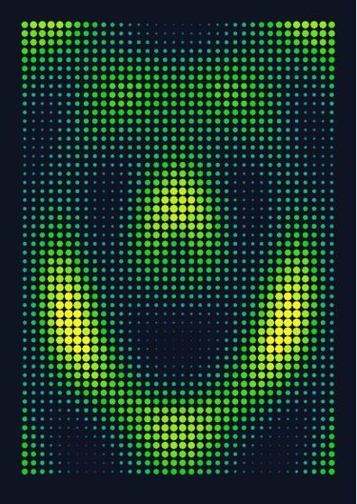
10_val_puncte.py
Val de puncte
Grilă de puncte a căror mărime și culoare urmează o funcție; arată ca un relief.
Cere numărul de coloane și frecvența Se învață principiul rasterului de tipar: puncte mari = ton închis Descarcă scriptul
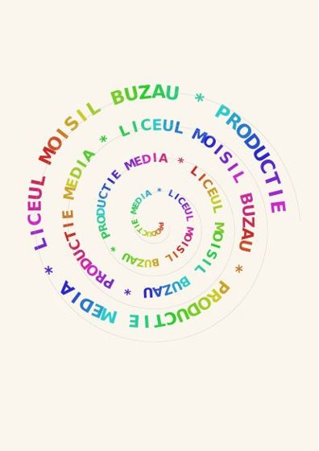
11_text_spirala.py
Text pe spirală
Literele unei fraze așezate pe o spirală, fiecare rotită după curbă.
Cere textul și numărul de ture Se învață rotirea obiectelor; culori în succesiune Descarcă scriptul
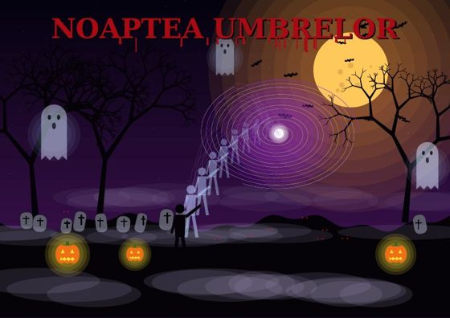
12_noaptea_umbrelor.py
Noaptea umbrelor
Compoziție A3 de Halloween: lună, copaci, cimitir, fantome, dovleci, vârtej; alta la fiecare rulare.
Cere — Se învață o scenă mare compusă din funcții mici Descarcă scriptul
Desen tehnic și corpuri 3D
Piese mecanice desenate din calcul, cu umbrire.
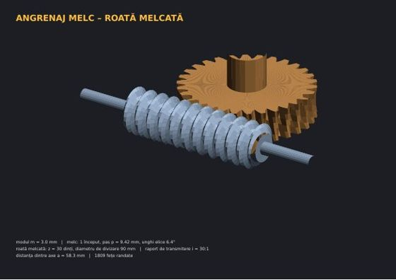
13_surub_fara_sfarsit.py
Melc și roată melcată
Angrenaj cu șurub fără sfârșit, desenat în spațiu, cu datele calculate afișate pe planșă.
Cere unghiurile de vedere și numărul de dinți Se învață suprafețe descrise prin formule; umbrire după lumină Descarcă scriptul
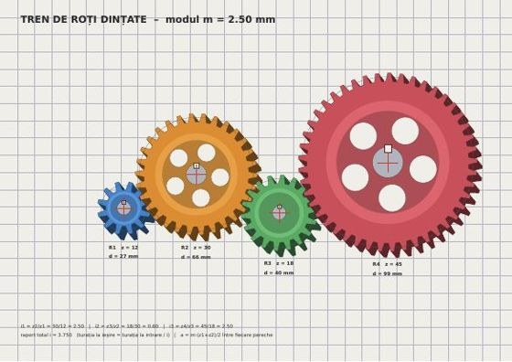
14_tren_roti_dintate.py
Tren de roți dințate
Roți dințate care angrenează corect, cu raportul de transmitere calculat.
Cere modulul și numerele de dinți Se învață geometria roților dințate Descarcă scriptul
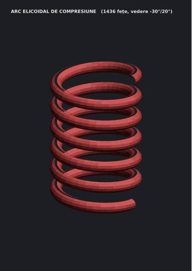
15_atelier_3d.py
Atelier 3D
Cinci corpuri la alegere: arc elicoidal, tor, arbore în trepte, sferă, șurub cu cap hexagonal.
Cere corpul și unghiurile de vedere Se învață corpuri de rotație; elicea Descarcă scriptul
Machete de publicații
Machete complete, cu text de umplutură și cadre goale pentru fotografii.
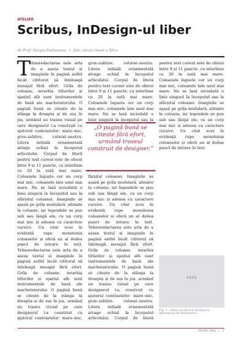
16_revista.py
Revistă
4 pagini A4: copertă, sumar, articol pe 3 coloane cu literă inițială mare și citat, galerie de imagini.
Cere numele revistei și tema numărului Se învață grila de coloane; ierarhia titlurilor Descarcă scriptul
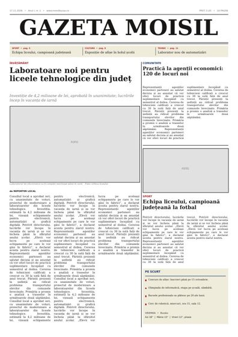
17_ziar.py
Ziar
Prima pagină a unui ziar A3 pe 5 coloane, cu textul legat de la o coloană la alta.
Cere numele ziarului Se învață cadre de text înlănțuite; ghidaje Descarcă scriptul
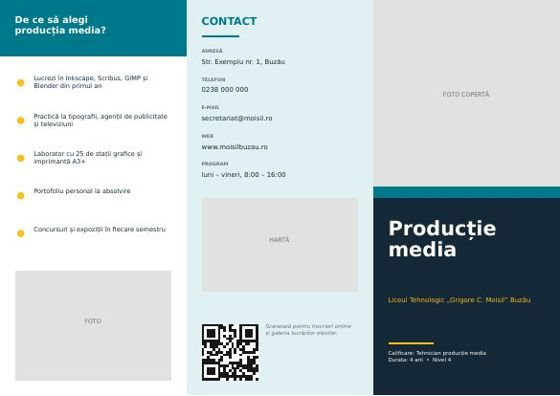
18_pliant_trei.py
Pliant în trei
Pliant A4 față-verso, cu cele 3 panouri în ordinea corectă pentru pliere.
Cere titlul și subtitlul Se învață ordinea panourilor la pliere; semne de pliere Descarcă scriptul
Șabloane pentru tipar
Documente goale, pregătite corect pentru tipografie; se folosesc la lecția „Fișierele PDF”.
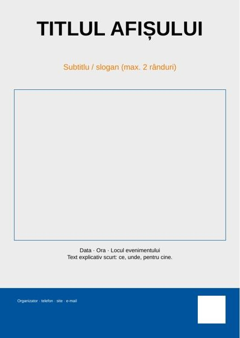
sablon_afis_A3.py
Afiș A3
Afiș cu margine de tăiere de 3 mm, culori CMYK, straturi și ghidaje.
Cere — Se învață pregătirea unui document pentru tipar Descarcă scriptul
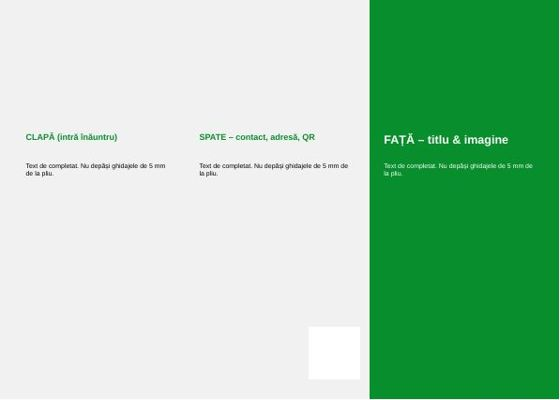
sablon_pliant_trifold.py
Pliant în C
Pliant A4 în trei; panoul care intră înăuntru are 97 mm, celelalte 100 mm.
Cere — Se învață lățimea panourilor la plierea în C Descarcă scriptul
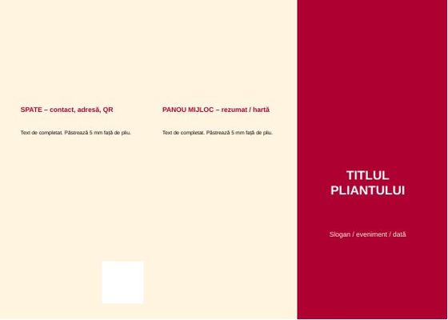
sablon_pliant_Z.py
Pliant în Z
Pliant A4 în trei, pliere în acordeon, 3 panouri egale de 99 mm.
Cere — Se învață diferența dintre plierea în C și în Z Descarcă scriptul
Exerciții
În 02_poster_tipografic.py se schimbă culorile din lista PALETA cu cele ale unei echipe sau ale unei mărci cunoscute.
În 03_calendar.py se colorează diferit o zi de sărbătoare legală.
Se face un fișier CSV cu colegii de clasă și se rulează 04_carti_vizita_csv.py cu el.
În 05_spirograf.py se schimbă un set (R, r, d) și se descrie cum s-a schimbat curba.
În 10_val_puncte.py se modifică funcția functie() astfel încât valurile să fie numai cercuri concentrice.
În 12_noaptea_umbrelor.py se schimbă titlul și se mută vârtejul în stânga paginii.
Se rulează 17_ziar.py , se înlocuiesc titlurile și cadrele FOTO cu conținut propriu și se exportă PDF-ul.
În 15_atelier_3d.py se adaugă un corp nou (un con), după modelul sferei.
Scripturile au fost verificate în Scribus 1.6.1. Imaginile arată rezultatul obținut cu valorile propuse de fiecare script.